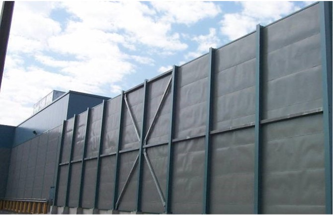

An air-cooled data center at full load generates between 60 and 80 decibels at the property line. Eighty decibels is a gas-powered lawnmower. It is also loud enough that, when it runs 24 hours a day, 365 days a year, the people who live near it start showing up to planning commission meetings with noise complaints, property value studies, and attorneys.
The data center industry has spent the last three years talking about power and water. Noise barely registered as a topic at conferences or in investor calls. That is changing. Communities across the United States and Europe are adding noise to the list of concerns that can delay, modify, or kill a data center project. Power and water are engineering problems with engineering solutions. Noise is a perception problem. Those are harder to solve.
The physics are straightforward. Air-cooled data centers use large fans to move ambient air across heat exchangers. More heat means more airflow. More airflow means more fan speed. More fan speed means more noise. At the densities required for modern AI workloads, where racks can draw 40 kW, 80 kW, or more, the air-side cooling systems required to reject that heat are enormous. Hundreds of fans spinning at high RPM, all day, every day.
Water-cooled systems operate between 40 and 60 decibels. That is the range between a household refrigerator and a dishwasher. The difference is dramatic. A water-cooled facility at 50 dB is background noise. An air-cooled facility at 75 dB is a constant industrial drone that carries across property lines, through walls, and into bedrooms. The decibel scale is logarithmic, so a 20 dB difference means the air-cooled system is roughly 100 times more intense in terms of sound pressure. Roughly a hundred times more intense in terms of sound pressure.
The reason water cooling is quieter is mechanical. Liquid carries heat far more efficiently than air. A water loop can transport the same thermal energy with a small pump that an air system needs dozens of large fans to move. Pumps are enclosed, vibration-dampened, and operate at lower frequencies. Fans are exposed, generate broadband noise, and create the kind of low-frequency hum that travels long distances and penetrates building structures.
Here is where the conversation gets uncomfortable for operators. The National Institute for Occupational Safety and Health sets the hearing damage threshold at 85 decibels for sustained exposure. An air-cooled data center at peak load operates within 5 dB of that line. Nobody is arguing that a data center at 80 dB is causing hearing loss in neighboring homes. But the proximity to a recognized health threshold gives community opponents a powerful rhetorical tool. "This facility operates within 5 decibels of the hearing damage threshold" is the kind of statement that sounds alarming in a planning commission hearing whether or not it represents an actual risk at the distances involved.
Seventy decibels is the equivalent of a busy freeway. Most residential zoning codes set nighttime noise limits between 45 and 55 dB at the property line. An air-cooled data center operating at 70 dB at its perimeter wall will exceed residential noise limits at distances that depend on terrain, vegetation, and atmospheric conditions, but commonly within a few hundred meters. This means setback requirements, noise barrier walls, acoustic enclosures on equipment, and in some cases, outright denial of building permits.
The geography compounds the problem. In water-scarce regions, where evaporative cooling towers and water-cooled chillers face permitting restrictions, operators are forced to use air cooling. Air cooling uses no water. It also uses a lot of fans. So the communities most protective of their water resources end up living next to the loudest data centers. Phoenix. Las Vegas. West Texas. Parts of Spain and the Middle East. These are the places where air cooling is often the only viable option and where the noise burden falls hardest on surrounding neighborhoods.
Conversely, regions with abundant freshwater, like Minnesota and the upper Midwest, can deploy water-cooled systems that operate at half the noise level. The Great Lakes region has cold water, cold winters for free cooling, and water availability that removes the primary objection to evaporative systems. The result is a geographic split where data centers in water-rich areas are better neighbors than data centers in water-poor areas. That split will widen as AI workloads push rack densities higher and cooling loads grow.
Noise does not exist in isolation. Communities near proposed data center sites are pushing back on a combined list of concerns that includes water usage, energy consumption, light pollution from security lighting, traffic from construction and operations, tax incentive giveaways, and now noise. Each issue individually might be manageable. Together, they create a cumulative impact argument that is difficult for developers to counter.
Property values matter. A homeowner who bought a house on a quiet rural road and now lives a quarter mile from an 80 dB industrial facility has a legitimate grievance. The academic research on noise and property values is consistent: sustained industrial noise above 55 dB at a residence correlates with measurable property value declines. Data center developers can argue about the exact magnitude, but they cannot argue that the effect does not exist.
The engineering team that selects the cooling architecture for a new data center facility has traditionally optimized for capital cost, operating efficiency, reliability, and space. Add noise to that list. A facility designed with water-cooled chillers and closed-loop cooling towers will generate half the noise of an equivalent air-cooled facility. That noise reduction can be the difference between a smooth permitting process and a two-year fight with the local planning commission.
Some operators are already making this calculation. In suburban and exurban locations where residential development is encroaching on industrial zones, the additional capital cost of water cooling is being justified not by energy savings but by permitting risk reduction. A $5 million premium for quieter cooling equipment is cheap insurance against a $50 million delay caused by community opposition.
The data center industry has gotten very good at talking about PUE and WUE. It needs to get equally good at talking about decibels. The communities that host these facilities are paying attention to every dimension of impact, and noise is the one they experience every time they open a window.